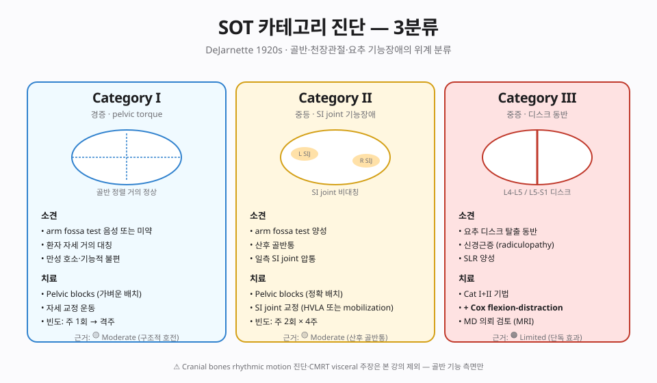
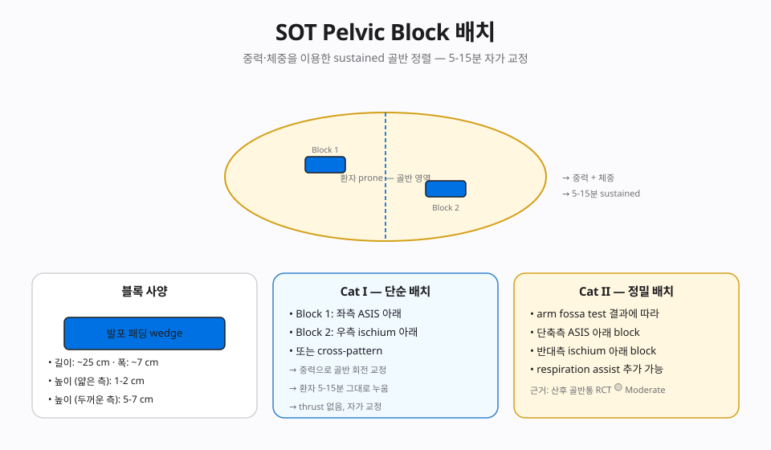

📊 핵심 다이어그램
이 챕터의 핵심 개념을 시각화한 도식.


📘 편집 원칙
근거 기반 의학(EBM) 관점. Vitalism · 전신질환 인과론 · AK 진단 확장 · Cranial rhythm 등 No evidence 주장은 🔴 제외 또는 비판적으로만 언급합니다.
개요
본 챕터가 다루는 기법
Major DeJarnette(1920s-1992) 카테고리 I(골반 torsion), II(천장관절 체중지지), III(posterior SI 디스크). 쐐기형 pelvic blocks로 환자 호흡·체중을 활용한 저침습 교정.
근거 수준 한눈에
근거
🟡 Moderate (Pelvic blocks) / 🔴 Cranial·Visceral (No evidence)
이론·기전
모든 카이로프랙틱 기법은 Afferentation → 중추 처리 → Efferentation 프레임(Chapter 2 참조)에서 해석합니다. 이 기법이 어떤 구심성 입력을 만들고 어떤 원심 출력을 조절하는지.
창시자와 역사적 맥락
Major Bertrand DeJarnette(1899-1992)는 osteopathy와 카이로프랙틱 양쪽 교육을 받은 임상가로, 1925년경부터 Sacro-Occipital Technique(SOT)을 체계화했습니다. SOT는 천골(Sacrum)과 후두(Occiput)의 운동학적 연계를 가설로 세우고, Category I/II/III으로 환자의 패턴을 분류한 뒤 pelvic blocks(쐐기형 패드)을 이용한 sustained gravity-assisted 교정을 사용합니다.
⚠️ 본 강의의 SOT 범위 제한
SOT 전통에는 Cranial 기법(두개골 봉합부 분리에 의한 cranial rhythm 조절)과 Chiropractic Manipulative Reflex Technique(CMRT)(내장-척추 반사를 통한 내장 질환 치료)이 포함됩니다. 그러나 두 영역은 현대 의학·과학 근거가 확립되지 않았으므로(Cochrane·SR 수준 근거 없음, cranial rhythm 존재 자체에 대한 회의론), 본 강의는 pelvic block 기법만 다룹니다. 이는 Chapter 1의 EBM 편집 원칙(Cranial rhythm·Visceral manipulation 제외)과 일치합니다.
생체역학 — Pelvic block의 물리
Pelvic blocks(약 30° 경사진 쐐기형 패드 한 쌍)을 환자 양쪽 ilium 아래에 특정 방향 — Category에 따라 동일·교차 배치 — 으로 놓고 5-15분간 sustained로 둡니다. 환자의 체중과 중력이 천천히 ilium의 torsion을 풀고 천장관절의 ligament tension을 재배열하도록 유도합니다. 추력이 없는 passive long-duration 자극으로, 통증 과민 환자와 임산부에서도 비교적 안전합니다.
신경생리 — Afferentation → Central → Efferentation
- 🟢 Afferentation — 천장관절·이상근·골반저 근육의 캡슐·인대에 있는 Type III(Ruffini)·IV 수용기를 장시간 활성화. 골반저 부교감(S2-S4) 신경총 근접 자극.
- 🟡 중추 처리 — 후각 통증 modulation, 부교감 우세 전환, 이완 반응. 유의할 점은 SOT가 주장하는 'cranial rhythm을 통한 중추 효과'는 근거가 약하다는 점.
- 🟢 Efferentation — 골반저·이상근 톤 정상화, 골반 자세 재배열, 요통·SI 관절 통증의 단기 호전.
🟠 근거 수준 정리
- 🟡 Pelvic blocks — 임산부 골반 통증·SI 기능장애에서 small RCT· case series 수준. Limited-Moderate.
- 🔴 Cranial 조작 — Cochrane·SR 수준 근거 없음, cranial rhythm 존재 자체에 대한 회의 — 본 강의에서 제외.
- 🔴 CMRT(내장 조작) — 내장 질환 치료의 근거 없음 — 본 강의에서 제외.
임상 적용
적응증 — Pelvic block 한정
- 임신 관련 골반·요통(산과적 클리어런스 후)
- SI 관절 기능장애, 만성 골반저 긴장, 천장관절 통증
- HVLA가 부담되는 통증 과민·고령·소아 환자의 보조 자극
- 본 강의에서 다루지 않는 영역 — cranial 조작, 내장 조작은 제외(아래 안전 단원 참조)
Pelvic block 배치 protocol
- Category 분류 — 환자 평가(보행·자세·정적 촉진)로 Category I/II/III 중 어느 패턴인지 판단. Category I = 골반-경추 보상, II = SI 관절 dysfunction, III = lumbar disc lesion. 분류 자체가 임상 의사결정의 출발점.
- 자세 — Prone(또는 supine으로 변형), 환자를 안락한 자세로.
- Block 배치 — Category에 따라 양쪽 ilium 아래에 30° 쐐기 패드를 동일 방향 또는 교차 방향으로 배치. 압점은 PSIS 외측.
- 유지 시간 — 5-15분 sustained. 환자가 호흡과 함께 이완하도록 유도.
- 모니터링 — 통증 변화·신경 증상 발생 여부를 지속 관찰. 새로운 증상이 나타나면 즉시 중단.
🔴 안전 · 금기 · 다학제 협진
금기
- 절대 금기 — 골반/천골 부위의 진행성 종양·감염·골절, CES, 진행성 신경학적 결손, 산과적 위험(전치태반·태반 박리), 활동성 류마티스 관절의 급성기.
- 중단 신호 — 새로운 신경 증상, 방광·직장 증상, 통증 악화 — 즉시 block 제거 후 재평가 또는 의뢰.
🔴 본 강의 제외 영역 — Cranial · Visceral 조작
전통 SOT의 cranial rhythm 조작과 CMRT 내장 반사 치료는 본 강의에서 다루지 않습니다. 현대 의학 근거가 확립되지 않았고, 내장 질환의 치료는 내과·외과의 영역입니다. 환자가 이러한 시술을 요청하더라도 근거가 약함을 설명하고 적절한 전문과로 의뢰하는 것을 권합니다.
🔗 다학제 협진
임신 관련 골반통은 산부인과, 만성 골반저 통증은 비뇨의학과·산부인과·물리치료 (pelvic floor PT)와 통합. SOT pelvic block은 보조 자극 양식으로 위치시키고, 1차 치료가 아닌 통합 프로토콜의 일부로 사용합니다.
근거 수준
| 적응증 | 근거 수준 | 비고 |
|---|---|---|
| 본 기법 주된 적응증 | 🟡 Moderate (Pelvic blocks) / 🔴 Cranial·Visceral (No evidence) | 상세는 강의록 MD 참조 |
| 🔴 전신질환·내장·자폐·ADHD·천식·고혈압 치료 | 🔴 No evidence | Cochrane·PubMed 근거 없음 |
🔴 비판적 시각
🔴 Cranial bones rhythmic motion / Visceral manipulation 주장
SOT의 pelvic blocks 사용은 🟡 moderate 근거가 있지만, 두개골 리듬 진단·내장 조작으로 전신 질환 치료 주장은 🔴 No reliable evidence. 본 강의는 Category 진단과 블록 사용만 권장, Cranial/CMRT Visceral 부분은 비판적으로 다룸.
상세 비판 문헌 리뷰와 과장 vs 근거 비교표는 강의록 MD 확장판에서 다룹니다.
강의 자료
11/11 자료 준비 완료.
📖 강의록
🎧 팟캐스트
🎥 AI 동영상
🎴 PPTX 슬라이드 (4개 × 15장)
15장 🎴Part 2 · Aff/Def/Eff ✅ 준비 완료
15장 🎴Part 3 · Assessment ✅ 준비 완료
15장 🎴Part 4 · 임상·비판 ✅ 준비 완료
15장
📄 Report Markdown
NotebookLM 자동 생성 📄Report 2/4 ✅ 준비 완료
NotebookLM 자동 생성 📄Report 3/4 ✅ 준비 완료
NotebookLM 자동 생성 📄Report 4/4 ✅ 준비 완료
NotebookLM 자동 생성
NotebookLM 노트북: 열기 →